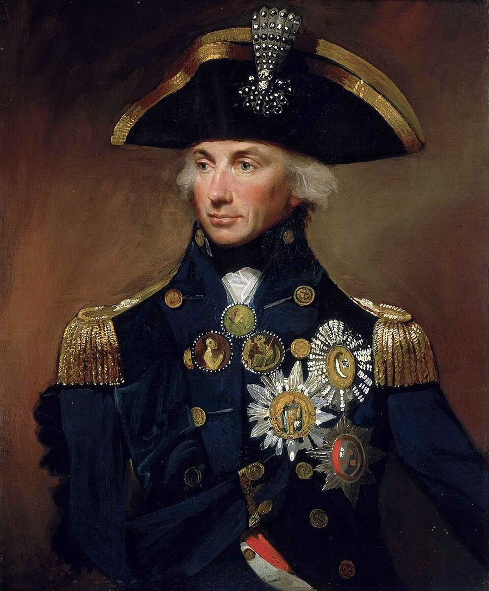

HoratioNelson
Vice-Admiral of the White · Viscount Nelson of the Nile · Duke of Bronté
A Norfolk parson's son who went to sea at twelve, lost the sight of an eye and then an arm, and won the three most complete naval victories of his age. He was killed at the moment of the third.
Born 29 September 1758 at Burnham Thorpe, Norfolk · Killed 21 October 1805 off Cape Trafalgar, 36°17′N 6°15′W

Four battles, drawn from above
Each plan plays the action through from first sighting to last gun. You can pause it, drag through it, step from phase to phase, and click any ship for her name, guns, captain and fate.
- 14 February 1797 Cape St Vincent Fifteen against twenty-seven. Commodore Nelson leaves the line without orders and boards two Spanish ships, one across the deck of the other. Open the plan
- 1 August 1798 The Nile A night attack on a fleet at anchor in Aboukir Bay. Eleven of thirteen French ships of the line are taken or destroyed; the flagship blows up. Open the plan
- 2 April 1801 Copenhagen A four-hour cannonade at two hundred yards against a moored line, three ships aground, and a signal to retreat that Nelson chose not to see. Open the plan
- 21 October 1805 Trafalgar Two columns break a line of thirty-three. Eighteen enemy ships are lost, no British ones, and Nelson dies in the cockpit of Victory at half past four. Open the plan
The reckoning, in brief
Counting the four fleet actions he fought in. The full figures, and how far to trust them, have a sheet of their own.
The sheets of this chart
- Engagements
Battles
Animated plans of the four great actions, with orders of battle and hour-by-hour logs, and nine lesser fights from Nicaragua to Boulogne.
Battles → - The man
Life & upbringing
The rectory at Burnham Thorpe, a mother dead at nine, an uncle in the Navy, a wife in Norfolk and Emma Hamilton at Merton.
Life → - Year by year
Timeline
Forty-seven years from the parsonage to the crypt of St Paul's, with the great days marked.
Timeline → - Twenty-nine vessels
His ships
Every ship he served in, from the Raisonnable in 1771 to the Victory in 1805, with her guns, his rank, and what he did aboard.
Ships → - Butcher's bill
The reckoning
Ships captured, sunk and burnt; killed, wounded and prisoners on both sides; the price in his own body.
The numbers → - Portsmouth, dry dock no. 2
HMS Victory
His flagship: 104 guns, six thousand trees, still in commission, and in the middle of the largest repair of her life. How to help pay for it.
HMS Victory → - Signals & letters
His words
“England expects”, flag by flag. The prayer before Trafalgar, the letters to Emma, the things he said under fire.
Words → - Friends & enemies
Captains & adversaries
Hardy, Collingwood, Troubridge and the band of brothers; Villeneuve, Brueys, Gravina and the men who fought them.
The people → - After 1805
Legacy & controversies
The funeral, the column, the myths, and the parts of the record that do him no credit: Naples in 1799 above all.
Legacy →
Why he still matters
Nelson was not the only good admiral Britain had. Jervis was a better disciplinarian, Howe a better tactician on paper, Cornwallis and Collingwood better at the grinding work of blockade. What set Nelson apart was that he wanted more from a battle than they did. An eighteenth-century fleet action was expected to end with a handful of prizes and both sides claiming the day. Nelson fought for annihilation, said so beforehand, and three times came close to getting it.
He got it by trusting people. He told his captains what he meant to do, weeks ahead, over dinner, and then left them to do it without signals. “The Nelson touch” was partly a plan of attack and mostly a habit of mind he had planted in thirty other men.
He was also vain, hungry for honours, careless of his wife, and for a year at Naples a worse man than at any other time in his life. This site tries to give both. The plans show what happened on the water; the legacy page looks at what has been made of him since.